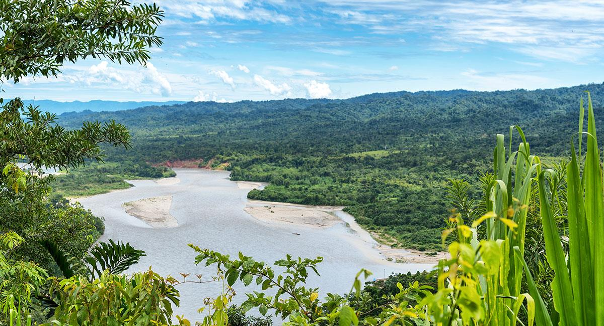
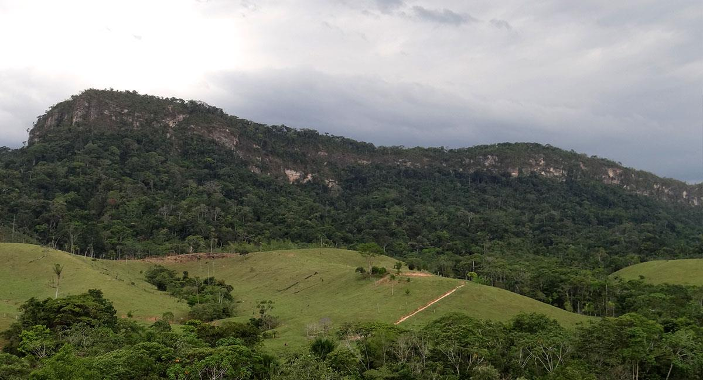
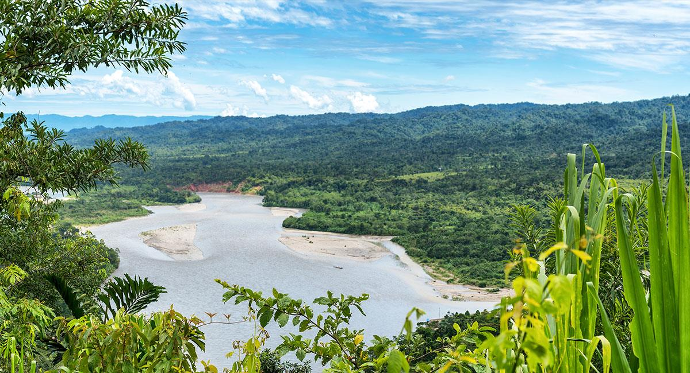
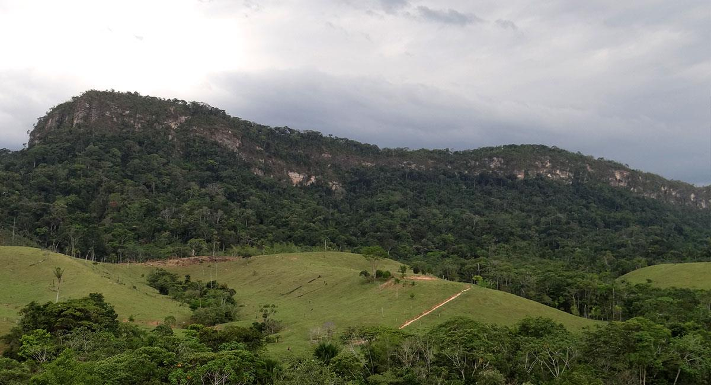

Cordillera de los Picachos
 



La Cordillera de los Picachos se erige como un impresionante sistema montañoso que ofrece vistas panorámicas espectaculares y un refugio para la vida silvestre. Este lugar es perfecto para los amantes del senderismo y la observación de aves, donde podrás explorar su rica flora y fauna en un entorno de paz y tranquilidad. Disfruta de actividades al aire libre y déjate llevar por la majestuosidad de sus cumbres. La Cordillera de los Picachos es una joya escondida que promete una experiencia única en contacto con la naturaleza.